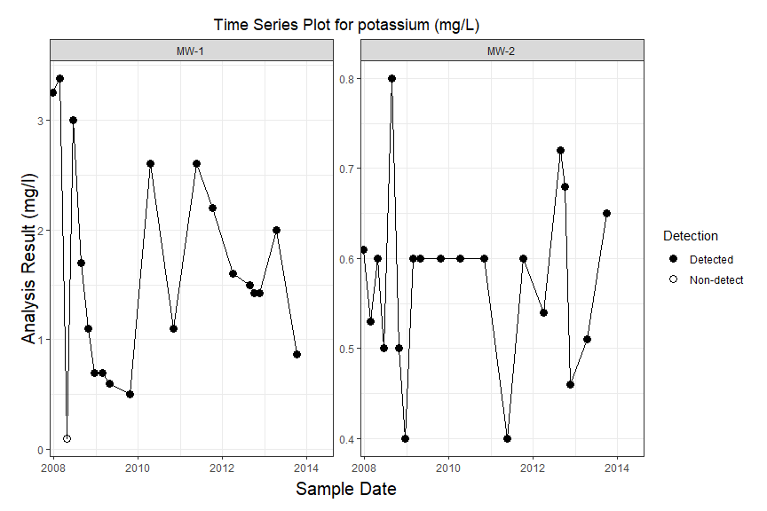
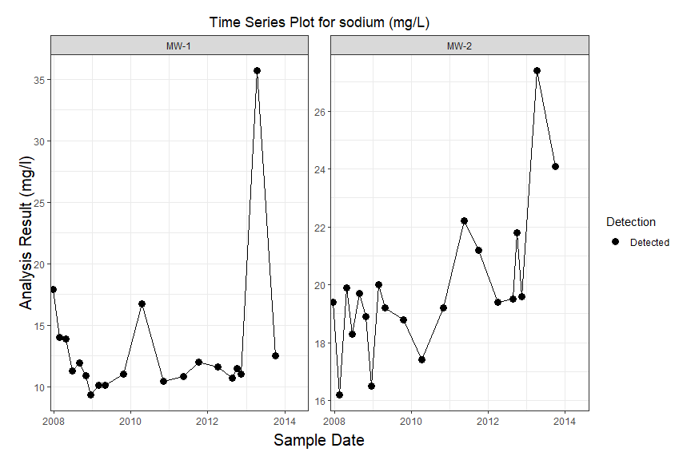
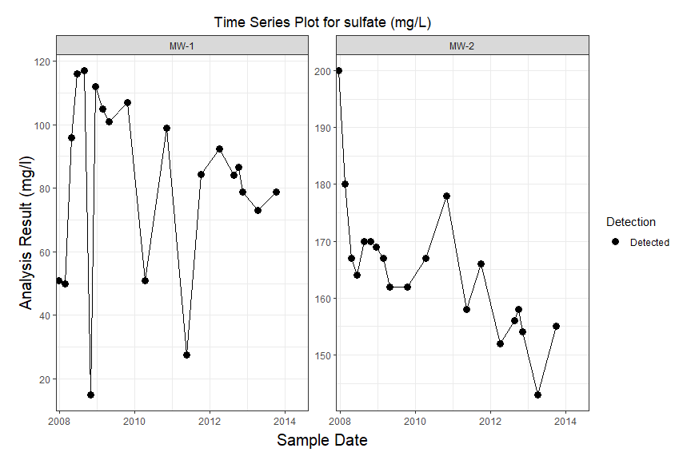

Overview
manager provides a standardized workflow for environmental data analysis in R.
The package centers around the env_schema class, a standardized environmental data model built on top of tidy data principles. Once data have been converted to env_schema, they can be analyzed, summarized, visualized, and reported using a consistent workflow.
Key features include:
- Standardized environmental data structure (
env_schema) - Native compatibility with dplyr and the tidyverse
- Time-series, boxplot, Piper, and spatial visualizations
- Summary statistics and reporting utilities
- Importers for MANAGES databases
Why manager?
Environmental datasets are often distributed across spreadsheets, laboratory reports, groundwater databases, and regulatory exports. manager provides a common data model(env_schema) that allows the same analysis and plotting tools to work across data sources without rewriting workflows for each project.
Installation
Install the development version from GitHub:
install.packages("remotes")
remotes::install_github("jentjr/manager")Quick Start
library(dplyr)
#>
#> Attaching package: 'dplyr'
#> The following objects are masked from 'package:stats':
#>
#> filter, lag
#> The following objects are masked from 'package:base':
#>
#> intersect, setdiff, setequal, union
library(manager)
data(gw)
gw %>%
filter(location_id == "MW-1",
.analyte == "Chloride") %>%
stats_summary()
#> # A tibble: 1 × 16
#> location_id param_name .analysis_unit n percent_censored mean median
#> <chr> <chr> <chr> <int> <dbl> <dbl> <dbl>
#> 1 MW-1 Chloride, total mg/l 20 0 22.0 21.9
#> # ℹ 9 more variables: sd <dbl>, var <dbl>, min <dbl>, max <dbl>, cv <dbl>,
#> # `25%` <dbl>, `75%` <dbl>, IQR <dbl>, mad <dbl>Environmental Data Standard
Datasets in manager use the env_schema class:
gw
#> <env_schema>
#> 5878 rows x 41 columns
#> Locations: 8
#> Analytes: 49
#> Valid: TRUE
#> Version: 0.5.0Output:
12345 rows × 15 columns
Locations: 48
Analytes: 72
Date range: 2015-01-01 to 2024-12-31
Class: env_schemaCore environmental variables include:
- location
- analyte
- result
- date
Additional metadata such as units, qualifiers, detection limits, coordinates, sample identifiers, and analytical methods can also be stored and preserved by the schema.
Import Data
gw <- read_manages3("Site.mdb")
gw <- read_manages4(
server = "MY_MANAGES_SERVER",
database = "MY_MANAGES_DATABASE",
site = "MY_SITE"
)Visualize Data
# load example data and plot time series of selected wells and constituents
data("gw")
wells <- c("MW-1", "MW-2")
params <- c("Magnesium, dissolved",
"Sodium, dissolved",
"Chloride, total",
"Sulfate, total",
"Potassium, dissolved")
gw %>%
filter(location_id %in% wells, param_name %in% params) %>%
series_plot()




# create boxplots filled by gradient
gw %>%
filter(param_name == "Chloride, total",
location_id %in% c("MW-1", "MW-2", "MW-3", "MW-4", "MW-5", "MW-6", "MW-7", "MW-8")) %>%
mutate(gradient = if_else(location_id %in% wells, "upgradient", "downgradient")) %>%
boxplot(fill = "gradient")
Piper Diagrams and more…
gw %>%
piper_plot()